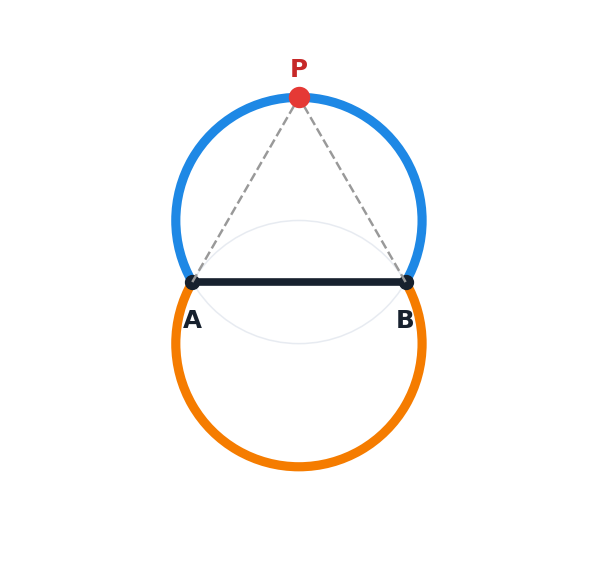

Colección de demostraciones interactivas para practicar y entender la geometría.

Lugar geométrico de los puntos desde los que un segmento AB se ve bajo un ángulo α. Mueve el deslizador para cambiar α y arrastra el punto P sobre el arco.
Geometría · ángulos · lugar geométrico